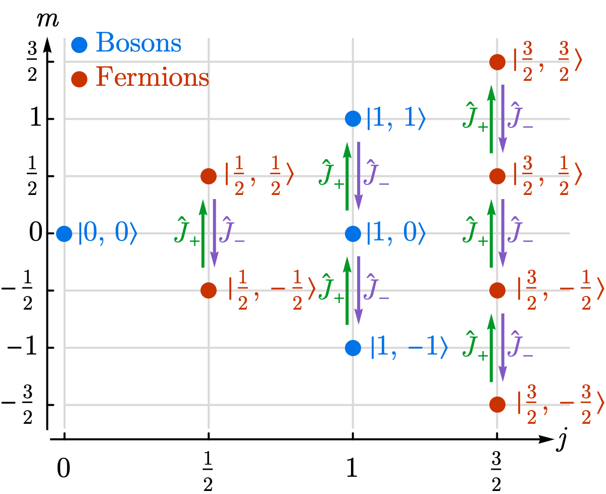

2.2.1 Angular Momentum Algebra#
Prompts
What are the fundamental commutation relations for angular momentum, and how do they encode the geometry of 3D rotations?
Define the Casimir operator \(\hat{J}^2\) and explain why it commutes with all components of \(\hat{\boldsymbol{J}}\). Why does this allow simultaneous eigenstates \(\vert j, m\rangle\)?
How do the ladder operators \(\hat{J}_\pm\) connect eigenstates with different \(m\)? Derive their normalization coefficients.
Show that angular momentum quantization (\(j = 0, \frac{1}{2}, 1, \ldots\)) follows purely from the algebra, without solving a differential equation.
Lecture Notes#
Overview#
In Chapter 1, we studied a single qubit — the spin-1/2 system with two eigenstates. This raises a natural question: what about higher spin? What constrains the possible values of angular momentum, and how do they arise?
The answer is remarkable: angular momentum quantization follows entirely from commutation relations, without solving any differential equation. All forms of angular momentum — orbital (\(\boldsymbol{L} = \boldsymbol{r} \times \boldsymbol{p}\)), spin (\(\boldsymbol{S}\)), and total (\(\boldsymbol{J} = \boldsymbol{L} + \boldsymbol{S}\)) — satisfy the same algebra. This algebra is the Lie algebra of SU(2), the group of rotations we met in §1.3.3. The physical content is simple: rotations in 3D do not commute, and angular momentum operators are their generators.
Angular Momentum Algebra#
Defining Relation
The three components of any angular momentum operator \(\hat{\boldsymbol{J}}=(\hat J_x,\hat J_y,\hat J_z)\) satisfy
Explicitly,
For orbital angular momentum these follow from \([\hat r_i,\hat p_j]=\mathrm{i}\hbar\delta_{ij}\); for spin they are postulated as the rotation-generator algebra.
Derivation: Orbital Angular Momentum Commutators
Using \(\hat L_i=\epsilon_{imn}\hat r_m\hat p_n\) and the canonical commutators \([\hat r_a,\hat p_b]=\mathrm{i}\hbar\delta_{ab}\), \([\hat r_a,\hat r_b]=[\hat p_a,\hat p_b]=0\):
Using \(\epsilon_{abc}\epsilon_{ade}=\delta_{bd}\delta_{ce}-\delta_{be}\delta_{cd}\) gives
\(\checkmark\)
Casimir Operator#
Casimir Operator
The total angular momentum squared
commutes with every component:
Derivation: \([\hat J^2,\hat J_z]=0\)
Using \([\hat A^2,\hat B]=\hat A[\hat A,\hat B]+[\hat A,\hat B]\hat A\):
which cancel exactly.
Ladder Operators#
Ladder Operators
Define
They satisfy
Derivation: Ladder Operator Commutation Relations
From \(\hat J_\pm=\hat J_x\pm\mathrm{i}\hat J_y\) and \([\hat J_i,\hat J_j]=\mathrm{i}\hbar\epsilon_{ijk}\hat J_k\):
And by linearity,
These commutation relations imply two useful operator identities:
Derivation: Ladder Product Identities
From
we get
Using \([\hat J_+,\hat J_-]=2\hbar\hat J_z\),
Solving these two equations gives (42).
Angular Momentum Representation Theory#
Because \([\hat J^2,\hat J_z]=0\), we can choose simultaneous eigenstates and build irreducible multiplets algebraically.
Common Eigenstates of \(\hat J^2\) and \(\hat J_z\)#
Simultaneous Eigenstates
Let \(\vert j,m\rangle\) satisfy
At this stage, \(j,m\in\mathbb{R}\) are labels; quantization is derived below.
Ladder Operator Action#
Ladder Action on \(\vert j,m\rangle\)
So \(\hat J_+\) raises \(m\) by one and \(\hat J_-\) lowers \(m\) by one.
Derivation: Ladder-Action Coefficients
From \([\hat J_z,\hat J_\pm]=\pm\hbar\hat J_\pm\) and \([\hat J^2,\hat J_\pm]=0\), the states \(\hat J_\pm\vert j,m\rangle\) lie in the same \(j\) multiplet with \(m\to m\pm1\).
For normalization, use (42):
Taking square roots yields (44).
Angular Momentum Quantization#
Quantization Rules
For each \(j\), the multiplet dimension is \(2j+1\).
{kind=link}

Fig. 3 States \(\vert j,m\rangle\) form vertical ladders in \(m\) for fixed \(j\); \(\hat J_+\) (green) and \(\hat J_-\) (purple) connect adjacent levels. Integer \(j\) (blue) and half-integer \(j\) (red) both satisfy the algebra.#
Proof: Quantum bootstrap argument
The quantum bootstrap is an algebraic method: constrain quantum numbers by positivity of norms. For any operator \(\hat A\) and state \(\vert\psi\rangle\),
Applied to angular momentum, this principle fixes the allowed values of \(j\) and \(m\).
From (43), take simultaneous eigenstates \(\vert j,m\rangle\) of \(\hat J^2\) and \(\hat J_z\).
(1) Positivity constraints. Apply positivity to \(\hat A=\hat J_+\) and \(\hat A=\hat J_-\) on \(\vert j,m\rangle\):
Using (44), these become
So \(m\) is bounded: \(-j\le m\le j\).
(2) Ladder unit-step structure. From \([\hat J_z,\hat J_\pm]=\pm\hbar\hat J_\pm\), each ladder action changes \(m\) by exactly one unit. Therefore all \(m\) values in one multiplet differ by integers.
(3) Finite-dimensional irreducibility. In a finite-dimensional irrep, the ladder must terminate at top and bottom states:
By (44), vanishing coefficients imply
Hence the ladder runs
with \(N=2j+1\) states.
Since \(N\in\mathbb N\), we must have \(2j\in\mathbb N_0\). Therefore
So quantization follows from algebra + positivity + finite-dimensional irreducibility.
Integer vs. half-integer: Orbital angular momentum (\(\hat{\boldsymbol{L}}=\hat{\boldsymbol{r}}\times\hat{\boldsymbol{p}}\)) gives only integer \(\ell\) from single-valued wavefunctions, while spin admits half-integer \(j\).
Matrix Representations#
For fixed \(j\), the operators act on a \((2j+1)\)-dimensional space.
Spin-1/2: Pauli Matrices
For \(j=1/2\):
Spin-1: 3\(\times\)3 Matrices
For \(j=1\):
Summary#
All angular momenta satisfy the same commutation relations \([\hat{J}_i, \hat{J}_j] = \mathrm{i}\hbar\epsilon_{ijk}\hat{J}_k\) — the Lie algebra \(\mathfrak{su}(2)\).
The Casimir operator \(\hat{J}^2\) commutes with all components, enabling simultaneous eigenstates \(\vert j, m\rangle\).
Quantization (\(j = 0, \frac{1}{2}, 1, \ldots\); \(m = -j, \ldots, j\)) follows from algebra alone.
Ladder operators \(\hat{J}_\pm\) shift \(m\) by \(\pm 1\) with known normalization.
Representations: spin-1/2 recovers Pauli matrices; spin-1 gives \(3\times 3\) matrices; general \(j\) gives \((2j+1)\)-dimensional irreducible representations.
Homework#
1. Verify the commutation relations \([\hat{J}_x, \hat{J}_y] = \mathrm{i}\hbar \hat{J}_z\) (and cyclic) by explicit computation for the spin-1/2 representation \(\hat{J}_i = \frac{\hbar}{2}\hat{\sigma}^i\).
2. Show that \([\hat{J}^2, \hat{J}_z] = 0\) by expanding \(\hat{J}^2 = \hat{J}_x^2 + \hat{J}_y^2 + \hat{J}_z^2\) and using the fundamental commutation relations. Why is this result essential for labeling states by \(j\) and \(m\) simultaneously?
3. Using the definitions \(\hat{J}_\pm = \hat{J}_x \pm \mathrm{i}\hat{J}_y\), derive \([\hat{J}_+, \hat{J}_-] = 2\hbar\hat{J}_z\) and \([\hat{J}_z, \hat{J}_\pm] = \pm\hbar\hat{J}_\pm\).
4. Use \(\hat{J}_+\vert j, m\rangle = \hbar\sqrt{(j-m)(j+m+1)}\vert j, m+1\rangle\) to explain why \(\hat{J}_+\vert 1, 1\rangle = 0\). Compute \(\hat{J}_-\vert 1, 0\rangle\) and verify using the spin-1 matrix representation.
5. For a state \(\vert j, m\rangle\), compute \(\langle \hat{J}_x\rangle\) and \(\langle \hat{J}_y\rangle\) using \(\hat{J}_x = \frac{1}{2}(\hat{J}_+ + \hat{J}_-)\). Explain physically why both vanish.
6. Show that the identity \(\hat{J}_-\hat{J}_+ = \hat{J}^2 - \hat{J}_z^2 - \hbar\hat{J}_z\) holds by expanding the left side. Use it to derive \(\|\hat{J}_+\vert j, m\rangle\|^2 = \hbar^2(j-m)(j+m+1)\).
7. Explain why orbital angular momentum only has integer \(\ell\) (hint: single-valuedness of \(Y_\ell^m(\theta, \phi)\) on the sphere) while spin can be half-integer. How does this connect to the spin-statistics theorem?